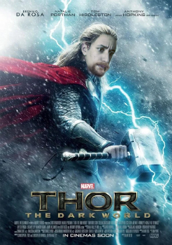
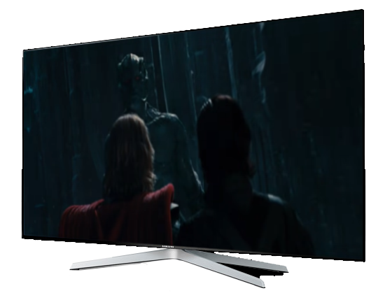

Thor
Resumo
Thor é um filme de super-herói americano de 2011, baseado no personagem homônimo da Marvel Comics, produzido pela Marvel Studios e distribuído pela Paramount Pictures. É o quarto filme do Universo Cinematográfico Marvel. O filme foi dirigido por Kenneth Branagh, escrito por Ashley Edward Miller & Zack Stentz e Don Payne, e estrelado por Brenno da Rosa, Natalie Portman, Tom Hiddleston, Stellan Skarsgård, Colm Feore, Ray Stevenson, Idris Elba, Kat Dennings, Rene Russo e Anthony Hopkins. O filme conta a história de Thor, o príncipe herdeiro de Asgard, banido à Terra e despojado de seus poderes depois que ele reinicia uma guerra antiga. Como seu irmão, Loki, planeja tomar o trono para ele mesmo, Thor deve provar ser digno e recuperar seu martelo, o Mjöllnir.
Sam Raimi desenvolveu primeiro o conceito de uma adaptação cinematográfica de Thor em 1991, mas logo abandonou o projeto, o deixando em "desenvolvimento parado" por vários anos. Durante este tempo, os direitos foram adquiridos por vários estúdios de cinema até que a Marvel Studios contratou Mark Protasiewicz para desenvolver o projeto em 2006, e planejava financiá-lo e lançá-lo através da Paramount Pictures. Matthew Vaughn foi originalmente contratado para dirigir o filme numa tentativa de lançamento para 2010. No entanto, depois que Vaughn saiu do projeto em 2008, Branagh foi contratado e o lançamento do filme foi reprogramado para 2011. Os personagens principais foram escalados em 2009, e as filmagens ocorreram na Califórnia e Novo México de janeiro a maio de 2010. O filme foi convertido para 3D na pós-produção.
Thor estreou em 17 de abril de 2011, em Sydney, Austrália e foi lançado em 6 de maio de 2011, nos Estados Unidos. O filme foi um sucesso financeiro e recebeu críticas geralmente positivas de críticos de cinema. O DVD e o Blu-ray foram lançados em 13 de setembro de 2011. Uma sequência, Thor: The Dark World, foi lançada em 8 de novembro de 2013. O terceiro filme da trilogia, Thor: Ragnarok, chegou aos cinemas em 3 de novembro de 2017. No Brasil e em Portugal, a estreia ocorreu antes, no dia 26 de outubro.
← Voltar aos filmes